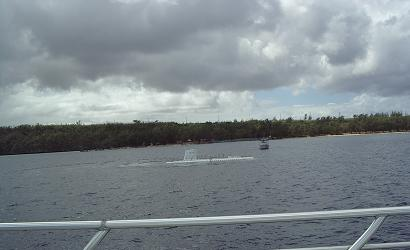

続きを見に行く
続きを見に行く

前日１０時に寝てしまったためか４時前から目が覚めてしまい、しばらくは ベッドにしがみついて目を閉じ、
「寝よう…」「寝なくては…」
あ・ぁ・ぁ・・・ 羊が…
あっちへぴょん! こっちへぴょん！と動き回って数えられないー！！
一時間くらいのち、もう限界とばかりにベッドから抜け出して、
「おはようございますー」
などと、どこぞのＴＶ番組並みに小声でマイクをにぎり…いやいや、握ったのはボー
ルペンで、メモ用紙に向かって旅行記を書き始め、書く 書く 書く…その時はいく
らでもどんどん書け、後で読んでみると、内輪ネタって見る人には面白いかもしれま
せんが、お互いに遠慮なくものを言っているので、他人様には恥ずかしくって聞かせ
られないような、とんでもなくいい加減なことを平気で話していたりして、おぞまし
いことこの上なく、殊に夫にとってははじめての海外でもあり、本当は書きたいこと
がいっぱいなんですが、一応彼の立場も考慮いたしまして、ちょっと控えめに…とい
うことで、
ボツ!！
朝食は昨日と同じレストランでバイキング。
バイキングというものはいろいろ味わってみたくて、少しずつながらもあれもこれも
とお皿に取り込んでしまい、頭ではわかっていても、手が勝手に持ってきて口が勝手
に食べてしまうので、昨夜に引き続いてカロリーオーバー２００％
N
さて、二日目のスケジュールとして、江戸の敵を…ではありませんが、済州島で果た
せなかった潜水艦に乗るべく、車体に潜水艦の絵をでかでかと描いたツアー送迎バ
スに乗り込んだところ、ホテルからそのバスに乗ったのは私たちだけで、広い車内に
は新婚旅行らしき若い男女が、
言い忘れていましたが、この潜水艦ツアーは大人＄７８ 子供＄３８で、身長９２cm 以下のお子様は乗船できません。
見覚えのある道を通って、ホテルから１５～２０分くらいバスで走ると一軒のお店に 到着し、案内に従ってみやげ物を並べた棚の間を通り抜け、桟橋へのドアを出た途端、 妙に張り切った声で、
「はい！ はい！ はい！ 旦那さんはここに立ってね！」
「奥さんは、これを持って！」
と、否も応もなく二人して潜水艦の絵を描いたボードの前でストップさせられ、船べ りに掛けられているような木製の浮き輪を持たされ、パチリ! !
いつものアレです…（＾＿＾；
グアムにはアメリカ空軍基地と海軍基地があり、潜水艦は海軍基地近くの同じ場所で 潜ったり浮いたりしているようで、そこまでは観光バス一台分の人数が乗れそうな シャトルボートで海上を移動します。
アトランティス号（潜水艦の名称）は、カリブ、ハワイなど世界９ヶ所の海で活躍し ているそうで、グアムの海ではハワイの二倍の約４０００種類のサンゴとおよそ８０ ０種類の魚が住んでいるとのこと。
エメラルドグリーンの波静かなアブラ湾内をシャトルボートで１０分くらい行くと、 遠くオロテ岬の端に灰色の軍艦らしき船が見え、一旦そこで停船し、海が白っぽく見 えるところに潜水艦がいるということで、今か今かと浮き上がってくる瞬間を待ちな がら、海を見つめ続ける。
ぼこ ぼこ ぼこ ・・・
っと水しぶきを上げながらアトランティス号がまるで映画のひとこまのように浮上し てきたときには、夫婦揃って、それぞれに構えたカメラで思わず連写してしまいまし た。（笑
浮上してきたアトランティス号に慎重に慎重にシャトルボートを接近させ、水浸しの 潜水艦のマンホールのような出入り口の蓋がパカッと開き、そこから一人の男の人 が顔を出したかと思うと、次から次へと観光客が出て来て、まずは深呼吸を…といっ た感じであたりの景色を見渡し、シャトルボートに乗り移ってきます。
入れ替わりに私たち四人が乗り込むことになりますが、もうひとつの入り口から狭い 階段というよりは梯子を降りていくと、上からは見えなかった水面下の丸い窓が両側 にずらりと並んでおり、普通のボートならば真ん中に通路があって、窓際に進行方向 を向いて二人掛けの椅子になっているところが、細長い艦内の真ん中に長い椅子が伸 びており、背中合わせに座って全員が丸い窓に向かえるようになっていました。
窓と椅子の間の通路を前に進むと、もうひとつの梯子の下にまだ先客が何組か残って おり、ひときわ大きな丸い窓を背にしたシュワちゃん似の艦長さんと一緒に写真を写 しています。
そういえばシャトルボートの船長さんも、金髪で 脚の長いハンサムボーイでしたし、 ガイドの女性は黒人系の小柄な 知的美人で、もう一人のお兄さんは映画の取り合わせ によくあるような、ちょっと太っちょの陽気なお笑い系 といったスタッフでした。
最後の一組が梯子の上に消えますと、前後の丸い蓋を静かに閉めて、真ん中に付いて
いる重そうな丸いハンドルを回して、これで艦内が密閉状態になったと思うと、
どこ
にも出口がなくなった!
という不安感がふっと頭をよぎ
った。が、(元より、泳げないんだし…出口があったところで、空気のあるところま
で泳いでいけるのかどうかさえ怪しいものだし…）すぐに目の前に展開
したエメラルドグリーンの世界に心を奪われ、不安の「ふ」の字さえも忘れ去ってい
ました。（なんとお気楽 笑）
窓の横にはヘッドホンがひとつずつ用意されていましたが、ボートから同行してきた ガイドさんは日本語で案内をしており、エンジン音はどんなだったのか、今考えても 思い出せないくらい気にならないものだったのか、とにかく肉声でしっかり聞こえて いたのは確かなのですが、魚の名前などはなぁんにも覚えておりません（＾ ＿＾；
もう一組の新婚さんらしきお二人は韓国の人のようで、お兄さんガイドが傍にいて案 内をしていましたが、言葉の違う二組の客が、お互いにガイドさんを独り占めできる なんて、本当にラッキーなことです。
２０ｍくらい潜ったところで、ダイバーが餌を撒いているようで、魚がちらほら見え るようになり、黄色いウチワのようなチョウチョウ魚（多分）の群れが、優雅に窓の 向こうを往ったり来たりするので、これを写真に写したくって仕方がなく、せっかく の案内も右の耳から左の耳へと抜けていき、カメラを構えたまま、魚たちが消えて いった見えるはずのない先をあっちから覗いてみたり、こっちから覗き込んでみたり …

←これは潜水艦の窓の一部ですが、厚さは１０cmくらいのアクリル製で、カメラの
フラッシュをたくと反射してしまって、何も写らないということです。
フラッシュを自動でたいてしまうカメラは、フラッシュ部分を指などで覆って写せば
大丈夫と聞いて何枚か同じような写真を写してきました。
トロピカルフィッシュの戯れる珊瑚の海中は、まさにファンタスティックな世界で、
珍しいものがいろいろ目につきましたが、なかでも私の目を引いたのが、ところどこ
ろにある蛸壺のようなもので、それを寝かせてロープなどで繋いだら正に蛸壺そのも
のという感じなのですが、蛸が入るには入り口の穴が小さいように見受けられ、サイ
ズも本物の蛸壺くらいのものから子供用の蛸壺みたいに小さいものもあり、それが、
みんな口を上に向けて立っているのです。
よくよく見てみると、それは小魚たちの家になっているようで、同じような魚が出た
り入ったりしています。
珊瑚がびっしりと張り付いた崖をすれすれの状態で前に進みながら、潜水艦が深く 潜っていくのが薄暗くなっていく海の状態でわかり、赤いデジタル表示になっている 深度計を見ていると最高３８ｍまで行き、流石にちょっと怖くなりました（＾ -＾；
約３５分間の潜水を終えて、艦長さんと一緒に写真を写してもらい、梯子を登って外 に出ると、次の観光客の群れがまたまたわんさと待っており、私たち四人は速やかに 潜水艦を明け渡して、貸切状態に近いシャトルボートでお店のあるところへ帰り、待 ち構えていたカメラマンに早速夫が捕まり、絵の前で写した写真を買わされておりま した。
私はアトランティスのロゴの入った小さめのバッグとリュックを買い、娘たちへの お土産をゲット！
続きを見に行く